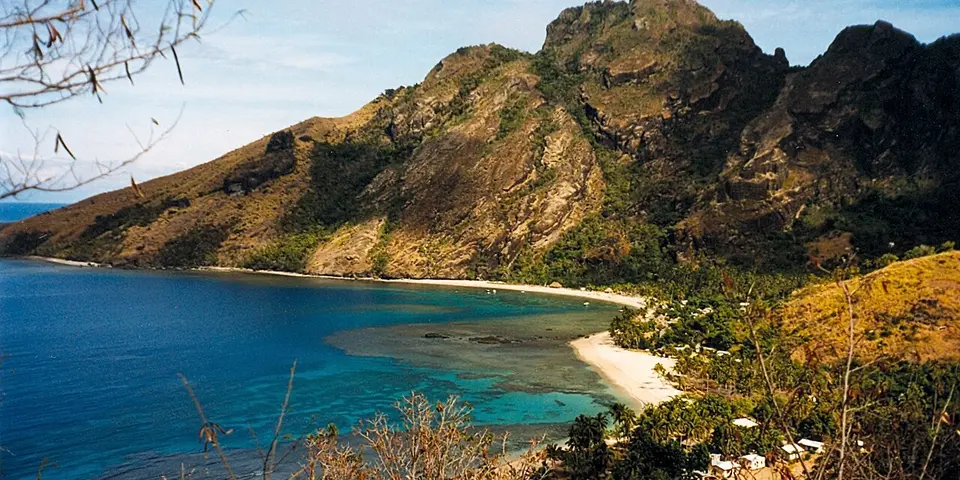

Oceania
Fiji on a budget
Budget island resorts with meals included, kava ceremonies, friendly villages and coral reefs, especially out in the Yasawa Islands.
Photo: User:Doron, CC BY-SA 3.0, via Wikimedia Commons

Classic route
Nadi, then island-hop the Yasawas. 10 days.
Before you go
Flights to Nadi: Skyscanner · Kiwi.com · Google Flights
Hostels and guesthouses in Nadi · Yasawa Islands · Mamanuca Islands · Taveuni
Tours and tickets: Nadi · Yasawa Islands
Mobile data: Fiji eSIM
Travel insurance: SafetyWing
How much 12 places in Fiji cost
Daily budgets per person in US dollars: a hostel dorm or simple guesthouse, local food, local transport and the usual entry fees.
-
Nadi
Fiji's arrival town, home to the colorful Sri Siva Subramaniya Hindu temple, a busy produce market and cheap curry houses run by Indo-Fijian families.
Bed $20 · Food $10 · Getting around $3 · Extras $5
Budget tip: Local buses into town cost about a dollar. Eat curry and roti at the market stalls instead of hotel restaurants.
$38per day -
Yasawa Islands
Hop between budget island resorts with meals included, snorkel coral reefs and join a village kava ceremony.
Bed $40 · Food $0 · Getting around $15 · Extras $10
Budget tip: A Bula Pass covers ferries between islands. Island resort dorms usually include meals, so there is little else to pay for.
$65per day -
Mamanuca Islands
Small islands ringed by reefs and sandbars, an easy boat ride from Nadi, with snorkelling straight off the beach and island-hopping day trips.
Bed $45 · Food $0 · Getting around $20 · Extras $10
Budget tip: Pick a dorm resort with a meal plan included; food on the islands is expensive otherwise, and there are few places to buy your own.
$75per day -
Taveuni
Fiji's 'garden island', with rainforest waterfalls at Bouma, the Rainbow Reef's soft corals and very few crowds.
Bed $30 · Food $12 · Getting around $6 · Extras $10
Budget tip: Snorkel Waitabu Marine Park with village guides. Local buses are cheap but infrequent, so plan your days around them.
$58per day -
Suva
Fiji's rainy, lively capital, with the Fiji Museum's war canoes, a huge municipal market and cheap Indian food on every corner.
Bed $25 · Food $10 · Getting around $3 · Extras $3
Budget tip: The Fiji Museum is cheap, and Colo-i-Suva Forest Park has free swimming holes and rope swings a short bus ride from town.
$41per day -
Levuka
Step back in time in Fiji's old colonial capital on Ovalau, a UNESCO-listed port with a wooden main street and sleepy guesthouses.
Bed $25 · Food $10 · Getting around $4 · Extras $3
Budget tip: Take the bus and ferry combination from Suva rather than flying; it is much cheaper and part of the experience.
$42per day -
Coral Coast
Lagoon beaches, the giant Sigatoka Sand Dunes and village visits with a kava ceremony along the sunny south of Viti Levu.
Bed $30 · Food $12 · Getting around $4 · Extras $8
Budget tip: Express buses run along the Queens Road between Nadi and Suva and will stop anywhere on request, far cheaper than a resort transfer.
$54per day -
Savusavu
Yachting town on Vanua Levu with hot springs steaming along the waterfront, pearl farm tours, reef snorkelling and quiet hill walks.
Bed $30 · Food $12 · Getting around $6 · Extras $10
Budget tip: Fly or take the overnight ferry from Suva; eat at the market roti stalls and snorkel from the shore near town.
$58per day -
Kadavu
An undeveloped island on the Great Astrolabe Reef, where you dive with manta rays and fall asleep in simple beachfront eco-lodges.
Bed $40 · Food $0 · Getting around $15 · Extras $20
Budget tip: Eco-lodges include meals, which keeps costs predictable. Domestic flights are cheaper than you think if you book early.
$75per day -
Pacific Harbour
Adventure hub on Viti Levu's south coast, with white-water rafting through the Upper Navua gorge and boat trips to rainforest waterfalls.
Bed $30 · Food $12 · Getting around $4 · Extras $40
Budget tip: Book rafting or Navua River trips directly with operators rather than through Nadi agents; Beqa shark dives also leave from here.
$86per day -
Beqa Lagoon
One of the world's famous shark dives, where bull sharks and sometimes tiger sharks circle close off Pacific Harbour.
Bed $30 · Food $12 · Getting around $5 · Extras $80
Budget tip: Book the shark dive directly with a dive shop in Pacific Harbour and skip the resort mark-up. Stay in a guesthouse rather than a resort.
$127per day
Know before you go
Fiji on a budget: the basics
Currency
$1 = 2.23 FJD
Fijian dollar
| Dollars to FJD | FJD to dollars | ||
|---|---|---|---|
| $1 | 2.23 FJD | 1 FJD | $0.448 |
| $5 | 11.15 FJD | 5 FJD | $2.24 |
| $10 | 22.30 FJD | 10 FJD | $4.48 |
| $20 | 44.61 FJD | 50 FJD | $22.42 |
| $50 | 112 FJD | 100 FJD | $44.84 |
| $100 | 223 FJD | 500 FJD | $224 |
A typical day here (about $65) is roughly 140 FJD.
Mid-market rate on 2026-10-05. Cash machines and exchange desks pay a little less.
Getting around
Cheap local buses circle Viti Levu, and minibuses and taxis fill the gaps around Nadi. To reach the Yasawas, the Yasawa Flyer catamaran stops at island resorts daily, and an island-hopping pass can save money. Book ahead in the busy June to September season.
Where to sleep
Budget island resorts in the Yasawas offer dorms and simple bungalows, usually with a required meal plan. In Nadi, hostels near Wailoaloa Beach are the cheap base.
What to eat
- Kokoda: raw fish cured in lime juice and coconut cream
- Lovo: meat and root vegetables cooked in an earth oven
- Kava: earthy root drink shared in a ceremonial bowl
- Roti and curry: Indo-Fijian curry wrapped or served with flatbread
Money
Cards work at bigger hotels and shops in Nadi and Suva, but there are no ATMs in the Yasawas, so take out enough cash before leaving. Tipping isn't expected, and haggling is only normal at handicraft markets.
Phone data
Prepaid SIMs from Vodafone Fiji or Digicel are sold at Nadi airport with your passport, with good coverage on the main islands and patchy signal in the outer islands.
Heads up
When visiting a village, bring a gift of kava root for the sevusevu welcome, cover your shoulders and knees, and remove your hat.
Fiji travel: quick answers
How much does a day in Fiji cost on a budget?
About $65 a day for one person, from $38 in Nadi to $127 in Beqa Lagoon. That covers a hostel dorm or simple guesthouse, local food, local transport and the usual entry fees, so a week runs about $455 before flights.
When is the best time to visit Fiji?
May to October is the best time, with the most reliable weather for getting around.
What is the cheapest place to visit in Fiji?
Nadi, at about $38 a day. Fiji's arrival town, home to the colorful Sri Siva Subramaniya Hindu temple, a busy produce market and cheap curry houses run by Indo-Fijian families.
How long do you need in Fiji?
Nadi, then island-hop the Yasawas. 10 days.
How much is $1 in Fiji?
One US dollar is about 2.23 Fijian dollar (FJD), going by the mid-market rate on 2026-10-05. So $20 is roughly 44.61 FJD, and a typical budget day of $65 comes to about 140 FJD.
How do you get around Fiji cheaply?
Cheap local buses circle Viti Levu, and minibuses and taxis fill the gaps around Nadi. To reach the Yasawas, the Yasawa Flyer catamaran stops at island resorts daily, and an island-hopping pass can save money. Book ahead in the busy June to September season.
What food should you try in Fiji?
Kokoda, raw fish cured in lime juice and coconut cream. Lovo, meat and root vegetables cooked in an earth oven. Kava, earthy root drink shared in a ceremonial bowl. Roti and curry, Indo-Fijian curry wrapped or served with flatbread.
Planning around the seasons? See where to go in May, or compare the cheapest countries nearby.
Similar budgets nearby
- Vanuatu $72/day
- New Zealand $76/day
- Australia $77/day
- Samoa $52/day